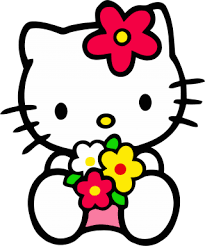

هاي شهودتي كيفك يا عيوني ياريت تكوني بخير هاد الموقع ساويته لاحكي شي بقلبي وعندك الخيارات💗
مهتمه خليكي عم تضغطي هون 💌
مو مهتمه فيك تضغطي هون 💖
هاد لزر مفاجا لو خترتي تكملي بليز خليها للاخير ولتزمي بلقوانين 🥺